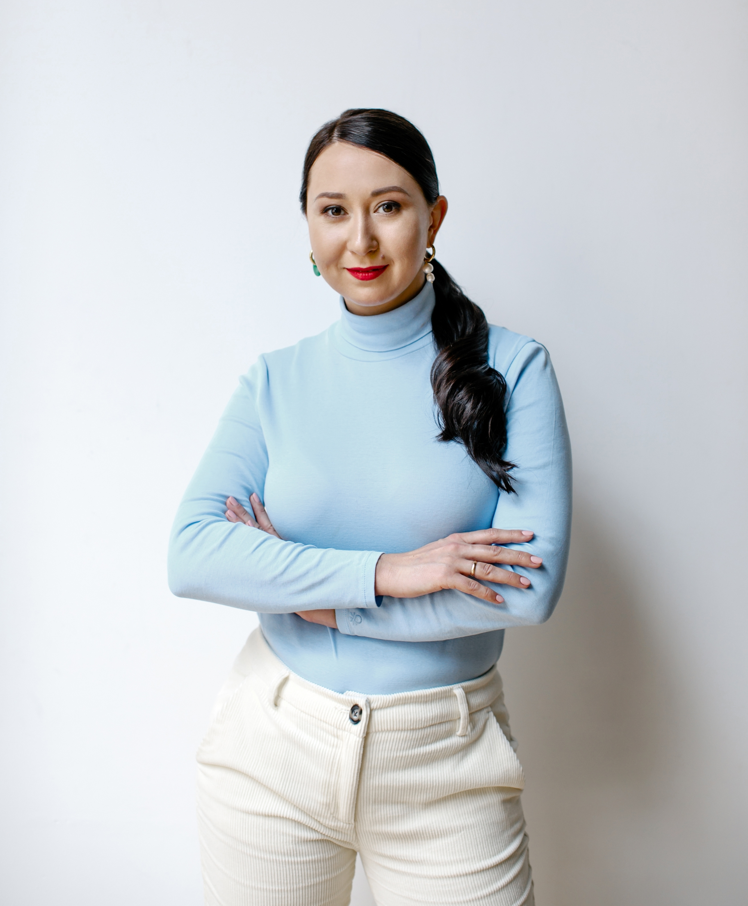

<!doctype html>
<html lang="en">
  <head>
    <meta charset="utf-8" />
    <meta content="width=device-width, initial-scale=1.0" name="viewport" />
    <title>Nadiia Nedorezova | Leadership Coaching</title>
    <link rel="preconnect" href="https://unpkg.com" />
    <link rel="preconnect" href="https://fonts.googleapis.com" />
    <link rel="preconnect" href="https://fonts.gstatic.com" crossorigin />
    <script src="https://cdn.tailwindcss.com?plugins=forms,container-queries"></script>
    <link href="fonts/pragmatica_book.css" rel="stylesheet" />
    <link
      href="https://fonts.googleapis.com/css2?family=Cormorant+Garamond:ital,wght@0,400;0,500;1,400;1,500&family=Material+Symbols+Outlined:wght,FILL@100..700,0..1&display=swap"
      rel="stylesheet"
    />
    <script>
      // Single design-token source of truth.
      tailwind.config = {
        darkMode: "class",
        theme: {
          extend: {
            colors: {
              // Surfaces
              paper: "#f9f9f6",      // default page background
              "paper-2": "#f3f3ef",  // alternating section background
              "paper-3": "#ecece7",  // deepest neutral surface
              // Ink
              ink: "#111111",        // primary text, solid buttons
              "ink-2": "#3c3c3c",    // secondary text
              "ink-3": "#6e6e6e",    // tertiary / muted meta
              "ink-4": "#a3a3a0",    // hint / divider-adjacent
              // Lines
              rule: "rgba(17,17,17,0.12)",
              "rule-soft": "rgba(17,17,17,0.06)",
              // Accent — the single signal color: CTAs, eyebrows, outcome label
              accent: "#1565d9",
              "accent-hover": "#0f4cb8",
              "accent-tint": "#e7ecf3",
            },
            fontFamily: {
              serif: ["Cormorant Garamond", "serif"],
              sans: ["PragmaticaWebBook", "ui-sans-serif", "system-ui", "sans-serif"],
            },
            maxWidth: {
              shell: "76rem",
            },
            borderRadius: {
              DEFAULT: "0",
              sm: "2px",
            },
          },
        },
      };
    </script>
    <style>
      html { scroll-behavior: smooth; }
      body {
        font-family: "PragmaticaWebBook", ui-sans-serif, system-ui, sans-serif;
        background: #f9f9f6;
        color: #111111;
        -webkit-font-smoothing: antialiased;
        -moz-osx-font-smoothing: grayscale;
      }

      /* Type scale — one source of truth */
      .t-display   { font-size: 4.5rem;   line-height: 1.05; letter-spacing: -0.025em; }
      .t-title-1   { font-size: 3rem;     line-height: 1.1;  letter-spacing: -0.02em; }
      .t-title-2   { font-size: 2rem;     line-height: 1.15; letter-spacing: -0.015em; }
      .t-title-3   { font-size: 1.375rem; line-height: 1.3;  letter-spacing: -0.01em; }
      .t-body-lg   { font-size: 1.25rem;  line-height: 1.55; }
      .t-body      { font-size: 1rem;     line-height: 1.6; }
      .t-body-sm   { font-size: 0.875rem; line-height: 1.55; }
      .t-label     { font-size: 0.6875rem; line-height: 1.3; letter-spacing: 0.18em; text-transform: uppercase; font-weight: 500; }
      .t-micro     { font-size: 0.625rem;  line-height: 1.3; letter-spacing: 0.24em; text-transform: uppercase; font-weight: 500; }

      @media (max-width: 768px) {
        .t-display { font-size: 2.75rem; letter-spacing: -0.02em; }
        .t-title-1 { font-size: 2.25rem; }
        .t-title-2 { font-size: 1.625rem; }
        .t-title-3 { font-size: 1.25rem; }
      }

      /* Shell — the one container used everywhere */
      .shell { max-width: 76rem; margin-left: auto; margin-right: auto; padding-left: 1.5rem; padding-right: 1.5rem; }
      @media (min-width: 768px)  { .shell { padding-left: 2.5rem; padding-right: 2.5rem; } }
      @media (min-width: 1280px) { .shell { padding-left: 4rem;   padding-right: 4rem; } }

      /* Section padding — three tokens, nothing in between */
      .section    { padding-top: 6rem; padding-bottom: 6rem; }
      .section-sm { padding-top: 4rem; padding-bottom: 4rem; }
      .section-lg { padding-top: 8rem; padding-bottom: 8rem; }
      @media (max-width: 768px) {
        .section, .section-lg { padding-top: 4rem; padding-bottom: 4rem; }
        .section-sm { padding-top: 3rem; padding-bottom: 3rem; }
      }

      /* Components */
      .btn {
        display: inline-flex; align-items: center; justify-content: center;
        padding: 0.95rem 1.6rem; font-size: 0.6875rem; letter-spacing: 0.18em;
        text-transform: uppercase; font-weight: 500; border-radius: 2px;
        transition: background-color .2s ease, color .2s ease, border-color .2s ease;
        cursor: pointer; white-space: nowrap;
      }
      .btn-primary { background: #1565d9; color: #f9f9f6; }
      .btn-primary:hover { background: #0f4cb8; }
      .btn-ghost { border: 1px solid rgba(17,17,17,0.22); color: #111111; background: transparent; }
      .btn-ghost:hover { border-color: #111111; }

      .tag {
        display: inline-flex; align-items: center;
        padding: 0.625rem 1rem;
        font-size: 0.6875rem; letter-spacing: 0.18em;
        text-transform: uppercase; font-weight: 500;
        border: 1px solid rgba(17,17,17,0.15);
        color: #3c3c3c;
        transition: border-color .2s ease, color .2s ease;
      }
      .tag:hover { border-color: rgba(17,17,17,0.5); color: #111111; }
      .tag-muted { border-style: dashed; color: #6e6e6e; }

      .link-inline {
        color: #111111; text-decoration: none;
        border-bottom: 1px solid rgba(17,17,17,0.22);
        transition: border-color .2s ease, color .2s ease;
      }
      .link-inline:hover { border-color: #1565d9; color: #1565d9; }

      .hairline { height: 1px; width: 100%; background: rgba(17,17,17,0.12); }

      .material-symbols-outlined {
        font-variation-settings: "FILL" 0, "wght" 400, "GRAD" 0, "opsz" 20;
        font-size: 20px; vertical-align: middle;
      }

      ::selection { background: #1565d9; color: #f9f9f6; }
    </style>
    <script src="https://unpkg.com/react@18/umd/react.production.min.js"></script>
    <script src="https://unpkg.com/react-dom@18/umd/react-dom.production.min.js"></script>
    <script src="https://unpkg.com/history@5/umd/history.production.min.js"></script>
    <script src="https://unpkg.com/react-router@6.3.0/umd/react-router.production.min.js"></script>
    <script src="https://unpkg.com/react-router-dom@6.3.0/umd/react-router-dom.production.min.js"></script>
    <script src="https://unpkg.com/@babel/standalone/babel.min.js"></script>
  </head>
  <body class="bg-paper text-ink">
    <div id="root"></div>
    <script type="text/babel">
      const { useState, useEffect } = React;
      const { createRoot } = ReactDOM;
      const { MemoryRouter, Routes, Route, Link, useNavigate, useLocation } = ReactRouterDOM;

      /* ─────────────────────────── Primitives ─────────────────────────── */

      const Shell = ({ children, className = "" }) => (
        <div className={`shell ${className}`}>{children}</div>
      );

      const Eyebrow = ({ children, tone = "accent", className = "" }) => (
        <span className={`t-label block mb-4 ${tone === "accent" ? "text-accent" : "text-ink-3"} ${className}`}>
          {children}
        </span>
      );

      const ScrollToTop = () => {
        const { pathname } = useLocation();
        useEffect(() => { window.scrollTo(0, 0); }, [pathname]);
        return null;
      };

      /* ─────────────────────────── Navigation ─────────────────────────── */

      const NavBar = () => {
        const [open, setOpen] = useState(false);
        const [scrolled, setScrolled] = useState(false);
        const location = useLocation();
        const navigate = useNavigate();

        useEffect(() => {
          const onScroll = () => setScrolled(window.scrollY > 8);
          onScroll();
          window.addEventListener("scroll", onScroll);
          return () => window.removeEventListener("scroll", onScroll);
        }, []);

        const isActive = (p) => location.pathname === p;
        const links = [
          { to: "/", label: "Home" },
          { to: "/about", label: "About" },
          { to: "/contact", label: "Contact" },
        ];

        return (
          <nav
            className={`fixed top-0 left-0 right-0 z-50 transition-colors duration-300 ${
              scrolled ? "bg-paper/90 backdrop-blur-md border-b border-rule" : "bg-paper/0"
            }`}
          >
            <div className="shell h-16 md:h-20 flex items-center justify-between">
              <Link to="/" className="font-serif italic text-xl text-ink">
                Nadiia Nedorezova
              </Link>
              <div className="hidden md:flex items-center gap-10">
                {links.map((l) => (
                  <Link
                    key={l.to}
                    to={l.to}
                    className={`t-label transition-colors ${isActive(l.to) ? "text-ink" : "text-ink-3 hover:text-ink"}`}
                  >
                    <span className="relative inline-block">
                      {l.label}
                      {isActive(l.to) && (
                        <span className="absolute -bottom-2 left-0 right-0 h-px bg-ink"></span>
                      )}
                    </span>
                  </Link>
                ))}
                <button onClick={() => navigate("/contact")} className="btn btn-primary">
                  Discuss your situation
                </button>
              </div>
              <button
                className="md:hidden p-2 text-ink"
                onClick={() => setOpen(!open)}
                aria-label="Menu"
              >
                <span className="material-symbols-outlined">{open ? "close" : "menu"}</span>
              </button>
            </div>
            {open && (
              <div className="md:hidden bg-paper border-t border-rule">
                <div className="shell py-6 flex flex-col gap-5">
                  {links.map((l) => (
                    <Link
                      key={l.to}
                      to={l.to}
                      onClick={() => setOpen(false)}
                      className={`t-label ${isActive(l.to) ? "text-ink" : "text-ink-3"}`}
                    >
                      {l.label}
                    </Link>
                  ))}
                  <button
                    onClick={() => { navigate("/contact"); setOpen(false); }}
                    className="btn btn-primary mt-2 self-start"
                  >
                    Discuss your situation
                  </button>
                </div>
              </div>
            )}
          </nav>
        );
      };

      /* ─────────────────────────── Footer ─────────────────────────── */

      const Footer = () => (
        <footer className="border-t border-rule">
          <Shell className="py-10 md:py-12 flex flex-col md:flex-row md:items-end md:justify-between gap-6">
            <div>
              <span className="font-serif italic text-lg text-ink block">Nadiia Nedorezova</span>
              <span className="t-micro text-ink-3 mt-2 block">Leadership coaching · 1:1 only</span>
            </div>
            <div className="flex flex-wrap items-center gap-6 md:gap-8">
              <a href="#" className="t-micro text-ink-3 hover:text-ink transition-colors">Privacy</a>
              <a href="#" className="t-micro text-ink-3 hover:text-ink transition-colors">Legal notice</a>
              <span className="t-micro text-ink-3">© 2026 Nadiia Nedorezova</span>
            </div>
          </Shell>
        </footer>
      );

      /* ─────────────────────────── Home content ─────────────────────────── */

      const recognitionItems = [
        "You carry more than you should",
        "Decisions feel heavier than before",
        "You can't afford mistakes anymore",
        "Too much depends on you",
        "Slowing down is not an option",
        "Continuing like this is no longer sustainable",
      ];

      const outcomes = [
        { title: "Clarity and precision", detail: "You start seeing your situation with clarity. Decisions become faster and more precise." },
        { title: "Control",               detail: "You regain a sense of control even when complexity has increased." },
        { title: "Sustainable growth",    detail: "The constant internal pressure decreases. You move forward without burning out." },
      ];

      const steps = [
        "Diagnostic of current situation",
        "Evaluation of risks and stakes",
        "Building a realistic strategy of growth",
      ];

      const cases = [
        {
          id: "01",
          role: "Senior leader after internal promotion, facing loss of control",
          happening: "New responsibilities without prior expertise. Pressure from top management with unrealistic expectations.",
          clear: "The situation was structurally flawed, not a personal failure.",
          outcome: "The client made a strategic decision, avoided burnout, and repositioned themselves on the market with stronger value.",
        },
        {
          id: "02",
          role: "Senior specialist aiming to transition into a leadership CPO role",
          happening: "There was a clear ambition to grow into a C-level position. At the same time, the client was convinced that their current manager would not support this transition. This led to considering opportunities outside the company as the primary path forward.",
          clear: "The perception of limited internal opportunities was shaped by a set of assumptions and untested interpretations. We identified the factors influencing confidence in leadership positioning and negotiation. The focus shifted to building strong vertical relationships and redefining internal positioning.",
          outcome: "The client secured a CPO role within the current company. This was followed by an expansion of responsibility — growing the team and increasing strategic influence.",
        },
        {
          id: "03",
          role: "Chief Operating Officer at the crossroads between two fundamentally different paths",
          happening: "One option was a major career step — leading an international branch of the company, requiring full relocation with the family. The alternative was to take a severance package and rebuild their position on the local market.",
          clear: "Within the first 15 minutes, the focus shifted. The question was not about compensation. It was about the reality of the future role — working dynamics with business owners, and the way business is actually run in that specific region. We unpacked the real risks and examined both options through the lens of long-term sustainability and life impact.",
          outcome: "With full clarity on the underlying risks, the client chose not to trade family stability for a professionally uncertain environment. The decision reduced internal tension, restored clarity, and allowed them to move forward with confidence.",
        },
        {
          id: "04",
          role: "Head of Project Office who rejoined the company from a competitor and promoted to Operations Director",
          happening: "Shortly after the promotion, the client was assigned a high-stakes task — to develop a three-year strategy for the division. Without prior strategic experience and under significant time pressure, the responsibility quickly turned into overwhelming pressure. The situation escalated, leading to burnout and eventual exit from the company.",
          clear: "In the very first session, the core issue became evident: the challenge was not a lack of capability, but a mismatch between the role and the expectations placed on it. Strategic planning at this level requires a different scope of responsibility, experience, and support than what was available. We also identified the exact points where pressure intensified without corresponding support from leadership.",
          outcome: "The client reframed the experience, moving away from a sense of personal failure towards a clear understanding of the systemic misalignment. We restored a sense of professional confidence and expertise, and defined concrete steps for recovery and re-entry into the market from a stronger position.",
        },
        {
          id: "05",
          role: "Chief Product Officer who realized they no longer wanted anything from life",
          happening: "Work became mechanical — attending meetings without engagement, declining new challenges, and avoiding responsibility. At home, life continued on autopilot — fulfilling roles without any sense of presence or connection.",
          clear: "We explored when this state began and what had broken underneath. The core pattern came from a professional sports background — the belief that if something doesn't work, you simply need to push harder. Over time, this approach led to chronic depletion and a loss of access to pleasure, interest, and intrinsic motivation. We separated genuine desire from imposed expectations and began rebuilding the ability to recognize what the client actually wants.",
          outcome: "The client started to regain access to their own motivation and internal direction. We introduced daily actions focused on restoring energy and engagement, and built a structured path out of burnout — towards a more stable, self-directed way of living and working.",
        },
      ];

      /* ─────────────────────────── HomePage ─────────────────────────── */

      const HomePage = () => {
        const navigate = useNavigate();
        const [openCase, setOpenCase] = useState(null);

        return (
          <div>
            {/* Hero */}
            <section className="pt-28 md:pt-40 pb-16 md:pb-24">
              <Shell>
                <div className="grid grid-cols-12 gap-8 md:gap-12 items-center">
                  <div className="col-span-12 lg:col-span-7">
                    <Eyebrow>Leadership Coaching</Eyebrow>
                    <h1 className="font-serif t-display text-ink mb-8">
                      Grow <span className="italic">without burnout</span>
                    </h1>
                    <p className="t-body-lg text-ink-2 max-w-xl mb-10">
                      I work with leaders who are still performing — but already paying too high a price for it.
                    </p>
                    <button onClick={() => navigate("/contact")} className="btn btn-primary">
                      Discuss your situation
                    </button>
                  </div>
                  <div className="col-span-12 lg:col-span-5">
                    <div className="aspect-[4/5] overflow-hidden bg-paper-2">
                      
                    </div>
                  </div>
                </div>
              </Shell>
            </section>

            {/* Recognition */}
            <section className="border-t border-rule section">
              <Shell>
                <div className="grid grid-cols-12 gap-8 md:gap-12">
                  <div className="col-span-12 lg:col-span-4">
                    <Eyebrow>Diagnosis</Eyebrow>
                    <h2 className="t-title-1 text-ink font-medium">You might recognize this.</h2>
                  </div>
                  <div className="col-span-12 lg:col-span-8">
                    <p className="t-body-lg text-ink-2 max-w-2xl mb-10 md:mb-14">
                      You are capable of more — but the cost of your decisions is getting higher.
                    </p>
                    <ul className="border-t border-rule">
                      {recognitionItems.map((text, i) => (
                        <li key={i} className="border-b border-rule py-5 md:py-6 flex items-baseline gap-6 md:gap-10">
                          <span className="t-micro text-accent w-8 shrink-0">{String(i + 1).padStart(2, "0")}</span>
                          <span className="t-body md:t-body-lg text-ink">{text}</span>
                        </li>
                      ))}
                    </ul>
                  </div>
                </div>
              </Shell>
            </section>

            {/* Reframe — single statement */}
            <section className="border-t border-rule section-lg bg-paper-2">
              <Shell>
                <div className="grid grid-cols-12 gap-8">
                  <div className="col-span-12 lg:col-span-10">
                    <Eyebrow>Reframe</Eyebrow>
                    <p className="font-serif t-title-1 text-ink">
                      This is not about weakness. It's about the{" "}
                      <span className="italic">level of responsibility</span>{" "}
                      you're operating at.
                    </p>
                  </div>
                </div>
              </Shell>
            </section>

            {/* Outcomes */}
            <section className="border-t border-rule section">
              <Shell>
                <div className="grid grid-cols-12 gap-8 mb-12 md:mb-16">
                  <div className="col-span-12 lg:col-span-4">
                    <Eyebrow>Outcomes</Eyebrow>
                    <h2 className="t-title-1 text-ink font-medium">What changes.</h2>
                  </div>
                  <div className="col-span-12 lg:col-span-8 lg:pt-2">
                    <p className="t-body-lg text-ink-2 max-w-xl">
                      The work delivers a specific shift — in how decisions are made, and in what they cost you.
                    </p>
                  </div>
                </div>
                <div className="grid grid-cols-1 md:grid-cols-3 border-t border-rule">
                  {outcomes.map((o, i) => (
                    <div
                      key={i}
                      className={`py-8 md:py-10 md:px-8 ${i !== 0 ? "border-t md:border-t-0 md:border-l border-rule" : ""}`}
                    >
                      <span className="t-micro text-ink-3 block mb-5">{String(i + 1).padStart(2, "0")}</span>
                      <h3 className="t-title-3 text-ink font-medium mb-3">{o.title}</h3>
                      <p className="t-body text-ink-2">{o.detail}</p>
                    </div>
                  ))}
                </div>
              </Shell>
            </section>

            {/* How we work */}
            <section className="border-t border-rule section">
              <Shell>
                <div className="grid grid-cols-12 gap-8 md:gap-16 items-start">
                  <div className="col-span-12 lg:col-span-5">
                    <Eyebrow>Method</Eyebrow>
                    <h2 className="t-title-1 text-ink font-medium mb-6">How we work.</h2>
                    <p className="t-body-lg text-ink-2 mb-10 max-w-md">
                      This is not about advice. It's a space where you start seeing things more clearly and making decisions you can rely on.
                    </p>
                    <ol className="border-t border-rule">
                      {steps.map((s, i) => (
                        <li key={i} className="border-b border-rule py-5 flex gap-8 items-baseline">
                          <span className="t-micro text-accent w-12 shrink-0">Step {["I", "II", "III"][i]}</span>
                          <span className="t-body text-ink">{s}</span>
                        </li>
                      ))}
                    </ol>
                  </div>
                  <div className="col-span-12 lg:col-span-7 bg-paper-2 border border-rule p-8 md:p-12">
                    <Eyebrow tone="muted">Format</Eyebrow>
                    <h3 className="t-title-2 text-ink font-medium mb-6">
                      1:1 coaching — focused, structured, tailored to your situation.
                    </h3>
                    <p className="t-body text-ink-2">
                      Between sessions, you have direct decision support from me. When the pressure spikes, you have a thinking partner who understands the nuances of your world but remains unattached to the office politics.
                    </p>
                  </div>
                </div>
              </Shell>
            </section>

            {/* Cases */}
            <section className="border-t border-rule section">
              <Shell>
                <div className="grid grid-cols-12 gap-8 mb-10 md:mb-14">
                  <div className="col-span-12 lg:col-span-4">
                    <Eyebrow>Cases</Eyebrow>
                    <h2 className="t-title-1 text-ink font-medium">Selected situations.</h2>
                  </div>
                  <div className="col-span-12 lg:col-span-8 lg:pt-2">
                    <p className="t-body text-ink-2 max-w-xl">
                      A short selection of situations worked through in recent practice. Names and identifying details are withheld.
                    </p>
                  </div>
                </div>
                <div className="border-t border-rule">
                  {cases.map((c) => {
                    const isOpen = openCase === c.id;
                    return (
                      <div key={c.id} className="border-b border-rule">
                        <button
                          onClick={() => setOpenCase(isOpen ? null : c.id)}
                          className="w-full flex items-center justify-between gap-6 py-6 md:py-8 text-left group"
                        >
                          <div className="flex items-baseline gap-6 md:gap-10 min-w-0">
                            <span className="t-micro text-accent w-8 shrink-0">{c.id}</span>
                            <span className="t-body md:t-body-lg text-ink group-hover:text-accent transition-colors">
                              {c.role}
                            </span>
                          </div>
                          <span
                            className={`material-symbols-outlined text-ink-3 group-hover:text-accent transition-all shrink-0 ${isOpen ? "rotate-45" : ""}`}
                          >
                            add
                          </span>
                        </button>
                        {isOpen && (
                          <div className="pb-10 md:pl-14 grid grid-cols-1 md:grid-cols-3 gap-8 md:gap-10">
                            <div>
                              <span className="t-micro text-ink-3 block mb-3">What was happening</span>
                              <p className="t-body text-ink-2">{c.happening}</p>
                            </div>
                            <div>
                              <span className="t-micro text-ink-3 block mb-3">What became clear</span>
                              <p className="t-body text-ink-2">{c.clear}</p>
                            </div>
                            <div>
                              <span className="t-micro text-accent block mb-3">Outcome</span>
                              <p className="t-body text-ink-2">{c.outcome}</p>
                            </div>
                          </div>
                        )}
                      </div>
                    );
                  })}
                </div>
              </Shell>
            </section>

            {/* Closing CTA */}
            <section className="border-t border-rule section-lg">
              <Shell>
                <div className="grid grid-cols-12 gap-8">
                  <div className="col-span-12 lg:col-span-9">
                    <Eyebrow>Start</Eyebrow>
                    <h2 className="font-serif t-title-1 text-ink mb-10">
                      Ready to change{" "}
                      <span className="italic">the way you work?</span>
                    </h2>
                    <div className="flex flex-wrap gap-4">
                      <button onClick={() => navigate("/contact")} className="btn btn-primary">
                        Discuss your situation
                      </button>
                      <button onClick={() => navigate("/about")} className="btn btn-ghost">
                        About Nadiia
                      </button>
                    </div>
                  </div>
                </div>
              </Shell>
            </section>
          </div>
        );
      };

      /* ─────────────────────────── About content ─────────────────────────── */

      const experience = [
        { years: "19", label: "HR Experience",          detail: "Across vertical and matrix structures — from startups to large holding companies." },
        { years: "12", label: "Recruitment",            detail: "Deep understanding of job responsibilities, role models, areas of responsibility, and influence across IT, digital, media, advertising, finance, and manufacturing." },
        { years: "6",  label: "Corporate Training",     detail: "Leadership skills development, as well as managing burnout, chronic anxiety, and fatigue. Certified trainer, Büro Richter." },
        { years: "10", label: "Psycholinguistics & NLP", detail: "Applied practice in language, cognition, and behavioural patterns in professional and organizational contexts." },
        { years: "6",  label: "Individual Coaching",    detail: "1:1 practice with a focus on neurobiology and neurophysiology. ICF & EMCC certified, ACC level." },
      ];

      const clients = ["Amazon", "Google", "BMW", "Booking", "Vodafone", "Facebook", "Swedbank"];

      /* ─────────────────────────── AboutPage ─────────────────────────── */

      const AboutPage = () => {
        const navigate = useNavigate();

        return (
          <div>
            {/* Hero */}
            <section className="pt-28 md:pt-40 pb-16 md:pb-24">
              <Shell>
                <div className="grid grid-cols-12 gap-8 md:gap-12">
                  <div className="col-span-12 lg:col-span-8">
                    <Eyebrow>ICF &amp; EMCC certified · ACC level</Eyebrow>
                    <h1 className="font-serif t-display italic text-ink mb-10">Nadiia Nedorezova</h1>
                    <div className="max-w-2xl space-y-5">
                      <p className="t-body-lg text-ink-2">
                        I work with leaders and decision-makers who are stacked. From the outside: growth, responsibility, results. Inside: constant pressure, decision fatigue, and reduced clarity.
                      </p>
                      <p className="t-body-lg text-ink">
                        Together we regain clarity in decision-making when pressure starts exceeding available capacity.
                      </p>
                    </div>
                  </div>
                  <div className="col-span-12 lg:col-span-4 lg:pt-16">
                    <div className="border-t border-rule pt-8 space-y-8">
                      <div>
                        <span className="t-micro text-ink-3 block mb-3">Certified by</span>
                        <p className="t-body text-ink">ICF &amp; EMCC — ACC level</p>
                        <p className="t-body text-ink">Corporate Trainer · Büro Richter</p>
                      </div>
                      <div>
                        <span className="t-micro text-ink-3 block mb-3">Working across</span>
                        <p className="t-body text-ink-2">Europe · UK · CIS</p>
                        <p className="t-body text-ink-2">Based in Munich</p>
                      </div>
                    </div>
                  </div>
                </div>
              </Shell>
            </section>

            {/* Experience */}
            <section className="border-t border-rule section bg-paper-2">
              <Shell>
                <div className="grid grid-cols-12 gap-8 mb-10 md:mb-12">
                  <div className="col-span-12 lg:col-span-5">
                    <Eyebrow>Background</Eyebrow>
                    <h2 className="t-title-1 text-ink font-medium">Grounded in real business constraints.</h2>
                  </div>
                  <div className="col-span-12 lg:col-span-7 lg:pt-2">
                    <p className="t-body text-ink-2 max-w-xl">
                      Nineteen years inside companies, observing how leadership actually breaks — and what it takes to put it back together.
                    </p>
                  </div>
                </div>
                <div className="border-t border-rule">
                  {experience.map((item, i) => (
                    <div key={i} className="border-b border-rule grid grid-cols-12 gap-4 md:gap-6 py-7 md:py-10 items-baseline">
                      <div className="col-span-3 md:col-span-2 flex items-baseline gap-1">
                        <span className="font-serif text-4xl md:text-5xl text-ink leading-none">{item.years}</span>
                        <span className="t-micro text-ink-3">yrs</span>
                      </div>
                      <div className="col-span-9 md:col-span-3">
                        <h3 className="t-title-3 text-ink font-medium">{item.label}</h3>
                      </div>
                      <div className="col-span-12 md:col-span-7">
                        <p className="t-body text-ink-2">{item.detail}</p>
                      </div>
                    </div>
                  ))}
                </div>
              </Shell>
            </section>

            {/* Clients */}
            <section className="border-t border-rule section">
              <Shell>
                <div className="grid grid-cols-12 gap-8 md:gap-12">
                  <div className="col-span-12 lg:col-span-4">
                    <Eyebrow>Clients</Eyebrow>
                    <h2 className="t-title-1 text-ink font-medium">
                      Leaders and experts from international organizations.
                    </h2>
                  </div>
                  <div className="col-span-12 lg:col-span-8 lg:pt-3">
                    <div className="flex flex-wrap gap-2">
                      {clients.map((n) => (
                        <span key={n} className="tag">{n}</span>
                      ))}
                      <span className="tag tag-muted">and others</span>
                    </div>
                    <p className="t-body-sm text-ink-3 mt-8 max-w-lg">
                      Past and current clients include leaders from international companies across Europe, the UK, and the CIS.
                    </p>
                  </div>
                </div>
              </Shell>
            </section>

            {/* CTA */}
            <section className="border-t border-rule section-lg">
              <Shell>
                <div className="grid grid-cols-12 gap-8">
                  <div className="col-span-12 lg:col-span-9">
                    <Eyebrow>Start</Eyebrow>
                    <h2 className="font-serif t-title-1 text-ink mb-6">Ready to change the way you work?</h2>
                    <p className="t-body-lg text-ink-2 mb-10 max-w-xl">
                      1:1 coaching only.
                    </p>
                    <button onClick={() => navigate("/contact")} className="btn btn-primary">
                      Discuss your situation
                    </button>
                  </div>
                </div>
              </Shell>
            </section>
          </div>
        );
      };

      /* ─────────────────────────── ContactPage ─────────────────────────── */

      const ContactPage = () => (
        <div>
          {/* Hero */}
          <section className="pt-28 md:pt-40 pb-12 md:pb-20">
            <Shell>
              <Eyebrow>Contact</Eyebrow>
              <h1 className="font-serif t-display text-ink">Get in touch.</h1>
              <p className="t-body-lg text-ink-2 mt-8 max-w-xl">
                Communication is personal and confidential. Reach out through the channel that fits the moment.
              </p>
            </Shell>
          </section>

          {/* Channels */}
          <section className="border-t border-rule section">
            <Shell>
              <div className="grid grid-cols-12 gap-8 md:gap-12">
                {/* Primary */}
                <div className="col-span-12 lg:col-span-7">
                  <Eyebrow>Primary channels</Eyebrow>
                  <h2 className="t-title-2 text-ink font-medium mb-3">Direct and formal.</h2>
                  <p className="t-body text-ink-2 mb-10 max-w-lg">
                    For inquiries, introductions, and networking.
                  </p>
                  <div className="border-t border-rule">
                    <a
                      href="mailto:nadiia@nedorezova.com"
                      className="border-b border-rule py-6 md:py-7 flex items-center justify-between gap-6 group"
                    >
                      <div>
                        <span className="t-micro text-ink-3 block mb-2">Email</span>
                        <span className="t-title-3 text-ink group-hover:text-accent transition-colors">
                          nadiia@nedorezova.com
                        </span>
                      </div>
                      <span className="material-symbols-outlined text-ink-3 group-hover:text-accent transition-colors">
                        arrow_forward
                      </span>
                    </a>
                    <a
                      href="https://www.linkedin.com/in/nadiia-nedorezova-64535728/"
                      target="_blank"
                      rel="noopener noreferrer"
                      className="border-b border-rule py-6 md:py-7 flex items-center justify-between gap-6 group"
                    >
                      <div>
                        <span className="t-micro text-ink-3 block mb-2">Executive networking</span>
                        <span className="t-title-3 text-ink group-hover:text-accent transition-colors">LinkedIn</span>
                      </div>
                      <span className="material-symbols-outlined text-ink-3 group-hover:text-accent transition-colors">
                        north_east
                      </span>
                    </a>
                  </div>
                </div>

                {/* Secondary */}
                <div className="col-span-12 lg:col-span-5">
                  <div className="bg-paper-2 border border-rule p-8 md:p-10 h-full">
                    <Eyebrow>Secondary channels</Eyebrow>
                    <h2 className="t-title-2 text-ink font-medium mb-3">Secure messaging.</h2>
                    <p className="t-body-sm text-ink-2 mb-8 max-w-sm">
                      Shared privately after initial contact via email.
                    </p>
                    <div className="border-t border-rule mb-8">
                      {["WhatsApp", "Telegram"].map((app) => (
                        <div key={app} className="border-b border-rule py-4 flex items-center justify-between">
                          <div>
                            <span className="t-label text-ink">{app}</span>
                            <span className="t-micro text-ink-3 block mt-1">By request</span>
                          </div>
                          <span className="material-symbols-outlined text-ink-3" style={{ fontSize: 16 }}>lock</span>
                        </div>
                      ))}
                    </div>
                    <div className="flex items-start gap-3 pt-5 border-rule">
                      <span
                        className="material-symbols-outlined text-ink-3 shrink-0"
                        style={{ fontSize: 18 }}
                      >
                        shield
                      </span>
                      <span className="t-micro text-ink-3 leading-relaxed">
                        All communications are strictly confidential
                      </span>
                    </div>
                  </div>
                </div>
              </div>
            </Shell>
          </section>

          {/* Closing note */}
          <section className="border-t border-rule section-sm">
            <Shell>
              <div className="grid grid-cols-12 gap-8">
                <div className="col-span-12 lg:col-span-8">
                  <p className="font-serif italic text-ink text-2xl md:text-3xl leading-snug">
                    "The work begins with assessing the true scale of the current problem and its impact on your career — because the right solution follows from that."
                  </p>
                </div>
              </div>
            </Shell>
          </section>
        </div>
      );

      /* ─────────────────────────── App ─────────────────────────── */

      const App = () => (
        <MemoryRouter>
          <ScrollToTop />
          <NavBar />
          <main>
            <Routes>
              <Route path="/" element={<HomePage />} />
              <Route path="/about" element={<AboutPage />} />
              <Route path="/contact" element={<ContactPage />} />
            </Routes>
          </main>
          <Footer />
        </MemoryRouter>
      );

      createRoot(document.getElementById("root")).render(<App />);
    </script>
  </body>
</html>
